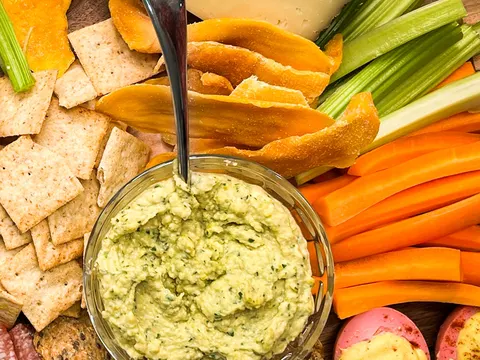
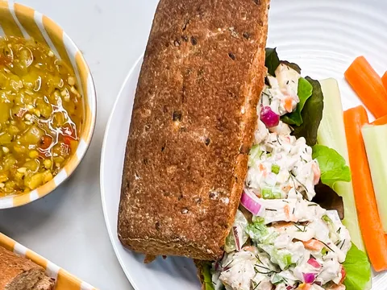
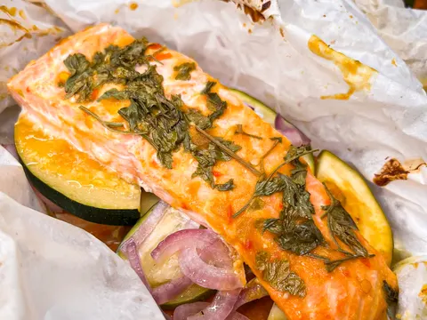

Home / Recipes
Recipes from the Byler kitchen.
Easy recipes with clear instructions and only a few steps, built on wholesome ingredients and simple techniques. No expensive equipment, no complicated cooking terms.
Home / Recipes
Easy recipes with clear instructions and only a few steps, built on wholesome ingredients and simple techniques. No expensive equipment, no complicated cooking terms.



Nineteen more recipes, from breakfast to sweets, are in the recipe box on Byler’s current site.